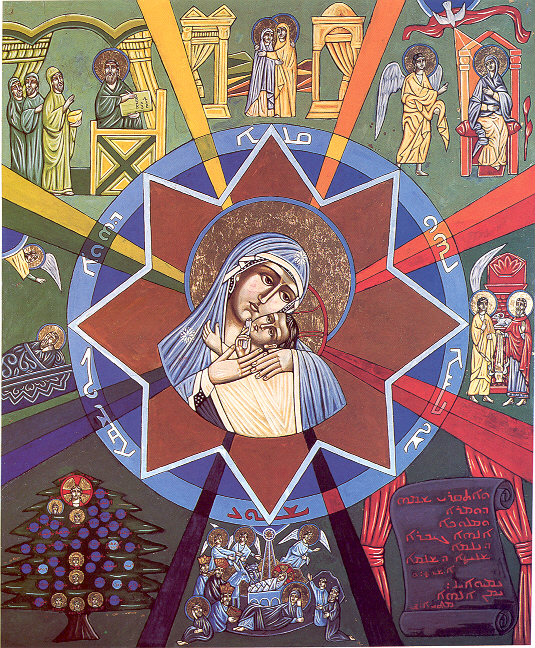

Anúncio

I Domingo e Dias da Semana
Anúncio a Zacarias
II Domingo e Dias da Semana
Anúncio a Maria
III Domingo e Dias da Semana
Visitação a Isabel
IV Domingo e Dias da Semana
Nascimento de João Batista
V Domingo e Dias da Semana
Revelação a José
VI Domingo e Dias da Semana
Genealogia de Jesus
ofício próprio do tempo
←
Voltar